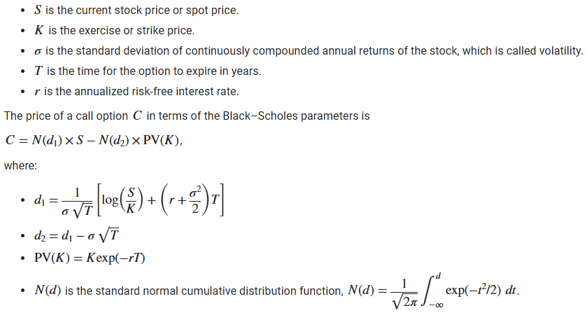

The Black-Scholes Model
The Black-Scholes Model is a mathematical formula used to calculate the theoretical price of European-style options. It assumes that markets are efficient, and that the price of the underlying asset follows a lognormal distribution with constant volatility and interest rates.
The model takes into account several factors:
- Current stock price
- Strike price of the option
- Time until expiration
- Risk-free interest rate
- Volatility of the stock
Using these inputs, the Black-Scholes formula outputs the fair value of a call or put option, helping traders assess whether an option is overpriced or underpriced in the market. It's widely used in finance and forms the foundation of modern options pricing.
Option Greeks
Greeks are financial metrics that measure the sensitivity of an option’s price to various factors. They help traders understand how an option’s value may change with shifts in the market. In this simulation, Greeks can guide agents in managing risk and making more informed trading decisions.
Here are the key Greeks:
-
Delta (Δ):
Measures how much the option's price changes in response to a $1 change in the underlying stock's price. Example: A Delta of 0.5 means the option price increases $0.50 if the stock rises $1. -
Gamma (Γ):
Measures the rate of change of Delta with respect to the stock price. Higher Gamma means Delta can change quickly, affecting option risk. -
Theta (Θ):
Measures how much the option’s value decreases as time passes (time decay). Especially important as expiration approaches. -
Vega (ν):
Measures sensitivity to volatility. Higher Vega means the option is more sensitive to changes in implied volatility.
